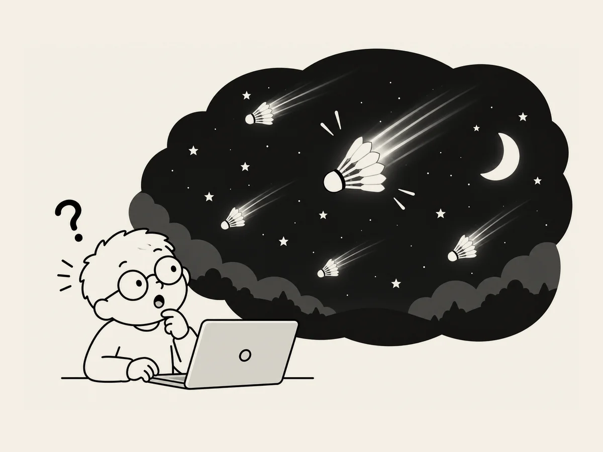

11.
僕が作ったウェブの夜空には、シャトルコックみたいな流れ星が降っていた。
夜空が
少し物足りなかった。
「流れ星が、
たまに流れるようにできる？」
できるという。
作った。
流れ星が流れる。
でも、
いつも似たような場所から流れる。
「こっちからも、
あっちからも
流れるようにしてみて」
変えた。
今度は、
規則的すぎる。
順番を決めて
流しているみたいだ。
「もう少し自然にできない？」
AIが、
乱数を使えばいいと言った。
たぶん、
適当にランダムに出すということらしい。
「うん。やってみて」
今度は、
それらしくなった。
できた。
ところが、
あれこれ調整しているうちに、
何か変なところを
触ってしまったらしい。
突然、
流れ星の尾が
両側にぱっと広がって
落ちてくる。
ちょっと待って。
これ、
何だ？
流れ星というより、
シャトルコックみたいだ。
僕が作ったウェブの夜空には、
シャトルコックみたいな流れ星が
降っていた。
